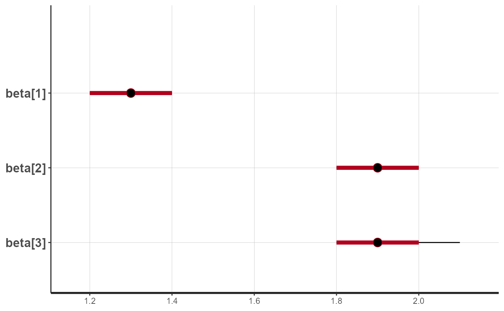

Fits exponential beta curves to 13C breath test series data using Bayesian Stan methods. See https://menne-biomed.de/blog/breath-test-stan for a comparision between single curve, mixed-model population and Bayesian methods.
stan_fit(data, dose = 100, sample_minutes = 15, student_t_df = 10, chains = 2, iter = 1000, model = "breath_test_1")
| data | Data frame or tibble as created by |
|---|---|
| dose | Dose of acetate or octanoate. Currently, only one common dose for all records is supported. |
| sample_minutes | If mean sampling interval is < sampleMinutes, data are subsampled using a spline algorithm |
| student_t_df | When student_t_df < 10, the student distribution is used to model the residuals. Recommended values to model typical outliers are from 3 to 6. When student_t_df >= 10, the normal distribution is used. |
| chains | Number of chains for Stan |
| iter | Number of iterations for each Stan chain |
| model | Name of model; use |
A list of classes "breathtestfit" and "breathteststanfit" with elements
coef Estimated parameters as data frame in a key-value format with
columns patient_id, group, parameter, method and value.
Has an attribute AIC.
data The effectively analyzed data. If density of points
is too high, e.g. with BreathId devices, data are subsampled before fitting.
stan_fit The Stan fit for use with shinystan::launch_shiny
or extraction of chains.
Base methods coef, plot, print; methods from package
broom: tidy, augment.
library(breathtestcore) suppressPackageStartupMessages(library(dplyr)) d = simulate_breathtest_data(n_records = 3) # default 3 records data = cleanup_data(d$data) # Use more than 100 iterations and 4 chains for serious fits # For execution on a local, multicore CPU with excess RAM we recommend # calling \code{rstan_options(auto_write = TRUE)}. fit = stan_fit(data, chains = 1, iter = 100) plot(fit) # calls plot.breathtestfit# Extract coefficients and compare these with those # used to generate the data options(digits = 2) cf = coef(fit) cf %>% filter(grepl("m|k|beta", parameter )) %>% select(-method, -group) %>% tidyr::spread(parameter, value) %>% inner_join(d$record, by = "patient_id") %>% select(patient_id, m_in = m.y, m_out = m.x, beta_in = beta.y, beta_out = beta.x, k_in = k.y, k_out = k.x)#> # A tibble: 3 × 7 #> patient_id m_in m_out beta_in beta_out k_in k_out #> <chr> <dbl> <dbl> <dbl> <dbl> <dbl> <dbl> #> 1 rec_01 26 24 1.3 1.3 0.010 0.011 #> 2 rec_02 43 43 1.9 1.9 0.012 0.012 #> 3 rec_03 16 17 1.9 1.8 0.013 0.012# For a detailed analysis of the fit, use the shinystan library not_run({ library(shinystan) launch_shinystan(fit$stan_fit) }) # The following plot are somewhat degenerate because # of the few iterations suppressPackageStartupMessages(library(gridExtra)) stan_plot(fit$stan_fit, pars = c("beta[1]","beta[2]","beta[3]"))#> Error in stan_plot(fit$stan_fit, pars = c("beta[1]", "beta[2]", "beta[3]")): could not find function "stan_plot"stan_plot(fit$stan_fit, pars = c("k[1]","k[2]","k[3]"))#> Error in stan_plot(fit$stan_fit, pars = c("k[1]", "k[2]", "k[3]")): could not find function "stan_plot"stan_plot(fit$stan_fit, pars = c("m[1]","m[2]","m[3]"))#> Error in stan_plot(fit$stan_fit, pars = c("m[1]", "m[2]", "m[3]")): could not find function "stan_plot"